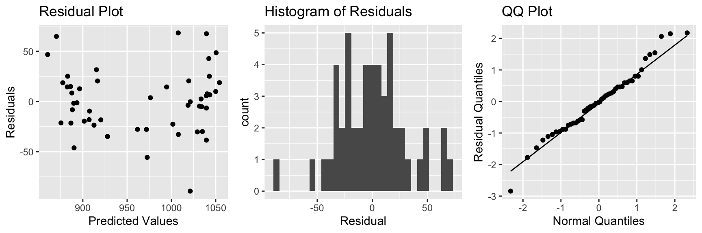
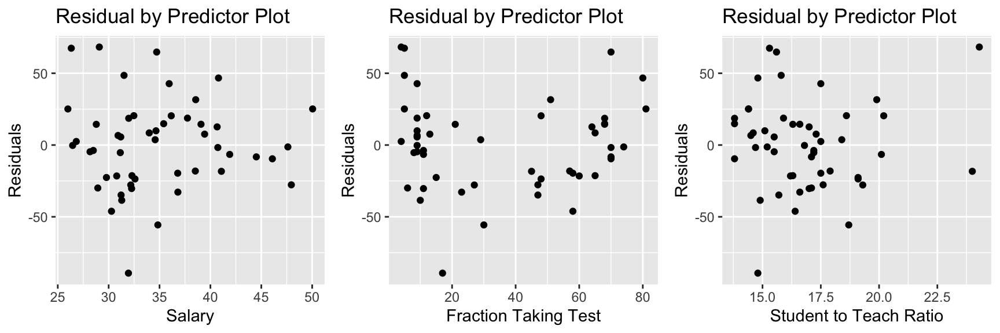
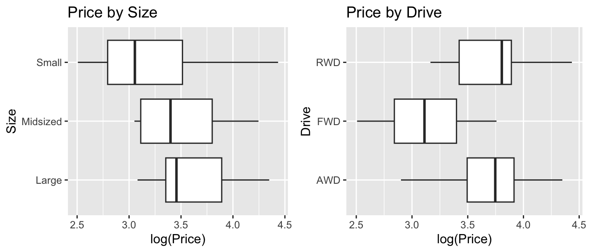
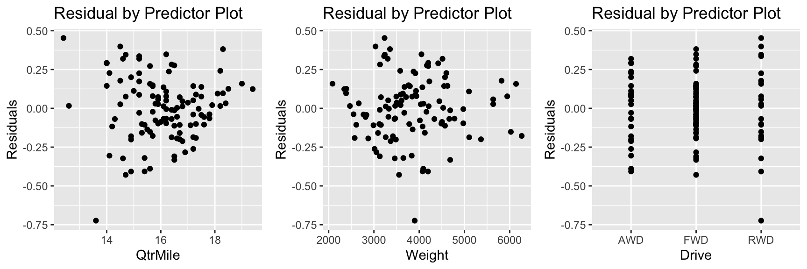

Chapter 6 Building Models for Interpretation
Learning Outcomes:
- Explain the differences in the ways we construct statistical models when we are focused primarily on interpretation.
- Describe the ways that multicollinearity influences the interpretability of regression models.
- Recognize situations where confounding and Simpson’s paradox might influence conclusions we draw from a model, and make appropriate interpretations in these situations.
- Evaluate the appropriateness of models using plots of residuals vs explanatory variables.
- Recognize when it is appropriate to use polynomials or other nonlinear functions in a statistical model, and interpret corresponding estimates of regression coefficients.
- Decide which variables to include in a statistical model, and justify your decision.
6.1 Model Building - SAT Scores
6.1.1 Modeling for Interpretation
So far, we’ve dealt with models with 2 or fewer variables. Some real questions require accounting for more than two variables. In these situations, we’ll need to develop a model that is complex enough to capture the important aspects of the mechanism we’re modeling, but also simple enough for us to be able to explain and interpret. We’ll need to decide how many variables to include in the model, and whether to use transformations, or to include interaction terms.
We’ll examine strategies for modeling in two different contexts. In this chapter, we’ll focus on building models for situations when we want to make interpretations and draw conclusions about relationships between variables. In Chapter 7, we focus on modeling solely for the purpose of prediction, when we are not interested in making interpretations or conclusions about relationships between variables.
When building a model for the purpose of interpretation, we are typically interested in investigating a research question pertaining to relationships between explanatory and response variables. We’ll need to think about things like:
- which explanatory variables should we include in the model, and how many?
- should we include any interaction terms?
- should we use any nonlinear terms?
- should we use a transformation of the response variable?
We’ll go through a couple example to see how we can address these questions in building a model.
Keep in mind, there is no single correct model, but there are common characteristics of a good model. While two statisticians might use different models for a given set of data, they will hopefully lead to reasonably similar conclusions if constructed carefully.
6.1.2 SAT Scores Dataset
We’ll now look at a dataset containing education data on all 50 states. It includes the following variables.
state - a factor with names of each state
expend - expenditure per pupil in average daily attendance in public elementary and secondary schools, 1994-95 (in thousands of US dollars)
ratio - average pupil/teacher ratio in public elementary and secondary schools, Fall 1994
salary - estimated average annual salary of teachers in public elementary and secondary schools, 1994-95 (in thousands of US dollars)
frac - percentage of all eligible students taking the SAT, 1994-95
sat - average total SAT score, 1994-95
region - region of the country
library(mosaicData)
data(SAT)
SAT <- SAT %>% dplyr::select(-c(verbal, math))
library(Lock5Data)
data("USStates")
SAT <- SAT %>% left_join(USStates %>% select(State, Region), by=c("state"="State")) %>% rename(region = Region)SAT## state expend ratio salary frac sat region
## 1 Alabama 4.405 17.2 31.144 8 1029 S
## 2 Alaska 8.963 17.6 47.951 47 934 W
## 3 Arizona 4.778 19.3 32.175 27 944 W
## 4 Arkansas 4.459 17.1 28.934 6 1005 S
## 5 California 4.992 24.0 41.078 45 902 W
## 6 Colorado 5.443 18.4 34.571 29 980 W
## 7 Connecticut 8.817 14.4 50.045 81 908 NE
## 8 Delaware 7.030 16.6 39.076 68 897 NE
## 9 Florida 5.718 19.1 32.588 48 889 S
## 10 Georgia 5.193 16.3 32.291 65 854 S
## 11 Hawaii 6.078 17.9 38.518 57 889 W
## 12 Idaho 4.210 19.1 29.783 15 979 W
## 13 Illinois 6.136 17.3 39.431 13 1048 MW
## 14 Indiana 5.826 17.5 36.785 58 882 MW
## 15 Iowa 5.483 15.8 31.511 5 1099 MW
## 16 Kansas 5.817 15.1 34.652 9 1060 MW
## 17 Kentucky 5.217 17.0 32.257 11 999 MW
## 18 Louisiana 4.761 16.8 26.461 9 1021 S
## 19 Maine 6.428 13.8 31.972 68 896 NE
## 20 Maryland 7.245 17.0 40.661 64 909 NE
## 21 Massachusetts 7.287 14.8 40.795 80 907 NE
## 22 Michigan 6.994 20.1 41.895 11 1033 MW
## 23 Minnesota 6.000 17.5 35.948 9 1085 MW
## 24 Mississippi 4.080 17.5 26.818 4 1036 S
## 25 Missouri 5.383 15.5 31.189 9 1045 MW
## 26 Montana 5.692 16.3 28.785 21 1009 W
## 27 Nebraska 5.935 14.5 30.922 9 1050 MW
## 28 Nevada 5.160 18.7 34.836 30 917 W
## 29 New Hampshire 5.859 15.6 34.720 70 935 NE
## 30 New Jersey 9.774 13.8 46.087 70 898 NE
## 31 New Mexico 4.586 17.2 28.493 11 1015 W
## 32 New York 9.623 15.2 47.612 74 892 NE
## 33 North Carolina 5.077 16.2 30.793 60 865 S
## 34 North Dakota 4.775 15.3 26.327 5 1107 MW
## 35 Ohio 6.162 16.6 36.802 23 975 MW
## 36 Oklahoma 4.845 15.5 28.172 9 1027 S
## 37 Oregon 6.436 19.9 38.555 51 947 W
## 38 Pennsylvania 7.109 17.1 44.510 70 880 NE
## 39 Rhode Island 7.469 14.7 40.729 70 888 NE
## 40 South Carolina 4.797 16.4 30.279 58 844 S
## 41 South Dakota 4.775 14.4 25.994 5 1068 MW
## 42 Tennessee 4.388 18.6 32.477 12 1040 S
## 43 Texas 5.222 15.7 31.223 47 893 S
## 44 Utah 3.656 24.3 29.082 4 1076 W
## 45 Vermont 6.750 13.8 35.406 68 901 NE
## 46 Virginia 5.327 14.6 33.987 65 896 S
## 47 Washington 5.906 20.2 36.151 48 937 W
## 48 West Virginia 6.107 14.8 31.944 17 932 S
## 49 Wisconsin 6.930 15.9 37.746 9 1073 MW
## 50 Wyoming 6.160 14.9 31.285 10 1001 WNote that the dataset is quite old (from 1994-95), so the financial information may be out of date. Nevertheless, it is useful for exploring relationships between SAT scores and other variables.
6.1.3 Research Question
A good statistical research question should be one that has practical implications that people would care about. It should be complex enough to be worth investigating. If the answer is obvious, then there would be no need to use statistics, or scientific reasoning in general.
For the SAT score dataset, we’ll focus on the question:
Do students in states that prioritize education spending achieve better SAT scores?
While this may seem like a straightforward question, we’ll see that answering it properly requires careful thought and analysis.
6.1.4 Teacher Salary and SAT score
One way to measure a state’s investment in education is in how much it pays its teachers. The plot displays average SAT score against average teacher salary for all 50 US states.
ggplot(data=SAT, aes(y=sat, x=salary)) + geom_point() +
stat_smooth(method="lm", se=FALSE) +
ggtitle("Average SAT score vs Average Teacher Salary") +
xlab("Average Teacher Salary in Thousands") Fitting a simple linear regression model to the data, we obtain the following:
SAT_M1 <- lm(data=SAT, sat~salary)
summary(SAT_M1)##
## Call:
## lm(formula = sat ~ salary, data = SAT)
##
## Residuals:
## Min 1Q Median 3Q Max
## -147.125 -45.354 4.073 42.193 125.279
##
## Coefficients:
## Estimate Std. Error t value Pr(>|t|)
## (Intercept) 1158.859 57.659 20.098 < 0.0000000000000002 ***
## salary -5.540 1.632 -3.394 0.00139 **
## ---
## Signif. codes: 0 '***' 0.001 '**' 0.01 '*' 0.05 '.' 0.1 ' ' 1
##
## Residual standard error: 67.89 on 48 degrees of freedom
## Multiple R-squared: 0.1935, Adjusted R-squared: 0.1767
## F-statistic: 11.52 on 1 and 48 DF, p-value: 0.001391On average, SAT score is expected to decrease by about 5.5 points for each additional one thousand dollars in average teacher salary in the state. The low p-value suggests a relationship like this is unlikely to occur by chance, though the practical importance of a 5-point decrease in SAT score (out of 1600) seems minimal. Furthermore, only 19% of the total variation in SAT score is explained by teaching salary. Nevertheless, a person looking to argue against raising teacher salaries might use the negative estimate and low p-value as a justification for their position.
6.1.5 A Deeper Investigation
Notice that there are large discrepancies in the frac variable, representing the percentage of students taking the SAT. In Connecticut, 81% of high school students took the SAT, compared to only 6% in Arkansas.
Let’s break the data down by the percentage of students who take the SAT. We’ll (somewhat arbitrarily), divide the states into
Low = 0%-22%
Medium = 22-49%
High = 49-81%
SAT <- mutate(SAT, fracgrp = cut(frac,
breaks=c(0, 22, 49, 81),
labels=c("low", "medium", "high")))Plotting SAT score against average teacher salary in each state, we see that the picture changes.
ggplot(data=SAT, aes( y=sat, x=salary )) +geom_point() + facet_wrap(facets = ~fracgrp) +
stat_smooth(method="lm", se=FALSE) + xlab("Average Teacher Salary in Thousands")There appears to be a slight positive relationship between teacher salary and SAT score in each state.
While breaking up the data into these three groups helps us visualize, we’ll simply add the frac variable to the model as a quantitative variable, rather than breaking it into these arbitrary categories.
SAT_M2 <- lm(data=SAT, sat~salary+frac)
summary(SAT_M2)##
## Call:
## lm(formula = sat ~ salary + frac, data = SAT)
##
## Residuals:
## Min 1Q Median 3Q Max
## -78.313 -26.731 3.168 18.951 75.590
##
## Coefficients:
## Estimate Std. Error t value Pr(>|t|)
## (Intercept) 987.9005 31.8775 30.991 < 0.0000000000000002 ***
## salary 2.1804 1.0291 2.119 0.0394 *
## frac -2.7787 0.2285 -12.163 0.0000000000000004 ***
## ---
## Signif. codes: 0 '***' 0.001 '**' 0.01 '*' 0.05 '.' 0.1 ' ' 1
##
## Residual standard error: 33.69 on 47 degrees of freedom
## Multiple R-squared: 0.8056, Adjusted R-squared: 0.7973
## F-statistic: 97.36 on 2 and 47 DF, p-value: < 0.00000000000000022For each one thousand dollar increase in average teacher salary, a state’s average SAT score is expected to increase by 2.18 points, assuming percentage of students taking the test is the same.
For each one percent increase in percentage of students taking the SAT, a state’s average score is expected to decrease by 2.78 points, assuming average teacher salary is the same.
Both of these estimates are associated with low p-values. While the effect of a 2 point increase per $1,000 in average teacher salary might seem small, the ~3 point decrease for each percentage point of students taking the exam is quite meaningful. According to the model, if the percentage of students taking the SAT is 10 percentage points higher than another, and the states pay their teachers the same, then the state with more people taking the exam is expected to have an average score almost 30 points lower.
Adding percentage of students taking the exam increased the \(R^2\) value substantially.
We see that the relationship between SAT score and salary appears to reverse when we account for percentage of students taking the test. States with low percentages of people taking the SAT tend to get higher scores, as the people taking the test tend to be those who are best prepared and have strong incentive for taking it, perhaps because they are trying to get into an elite college. At the same time, states that pay their teachers more tend to have higher percentages of people taking the SAT. This may be because states that prioritize education are more likely to cover the cost of students taking the test, or even to require it. It may also be that many of the states that require the SAT are coastal states, where cost of living, and thus teacher salaries, tend to be higher in general. Thus, it appears initially that teacher salaries are negatively correlated with SAT scores, but after accounting for percentage taking the test, the trend reverses. Situations where an apparent trend disappears or reverses after accounting for another variable are called Simpson’s Paradox.
6.1.6 Student-to-Teacher Ratio
Let’s see what other possible explanatory variables we might want to add to the model. Keep in mind that our goal is to understand the relationship between teacher salary and SAT scores in the state, so we should only use variables that help us understand this relationship.
In addition to teacher salaries, student-to-teacher ratio might be an indication of a state’s investment in education. We’ll add student-to-teacher ratio to the model and explore whether there is evidence that hiring enough teachers to keep student-to-teacher ratio low has a benefit, in terms of SAT score.
SAT_M3 <- lm(data=SAT, sat~salary+frac+ratio)
summary(SAT_M3)##
## Call:
## lm(formula = sat ~ salary + frac + ratio, data = SAT)
##
## Residuals:
## Min 1Q Median 3Q Max
## -89.244 -21.485 -0.798 17.685 68.262
##
## Coefficients:
## Estimate Std. Error t value Pr(>|t|)
## (Intercept) 1057.8982 44.3287 23.865 <0.0000000000000002 ***
## salary 2.5525 1.0045 2.541 0.0145 *
## frac -2.9134 0.2282 -12.764 <0.0000000000000002 ***
## ratio -4.6394 2.1215 -2.187 0.0339 *
## ---
## Signif. codes: 0 '***' 0.001 '**' 0.01 '*' 0.05 '.' 0.1 ' ' 1
##
## Residual standard error: 32.41 on 46 degrees of freedom
## Multiple R-squared: 0.8239, Adjusted R-squared: 0.8124
## F-statistic: 71.72 on 3 and 46 DF, p-value: < 0.00000000000000022Interpretations
On average, a $1,000 dollar increase in average teacher salary is associated with a 2.5 point increase in average SAT score assuming fraction of students taking the SAT, and student to teacher ratio are held constant.
On average, a 1% increase in percentage of students taking the SAT is associated with a 2.9 point decrease in average SAT score assuming average teacher salary, and student to teacher ratio are held constant.
On average, a 1 student per teacher increase in student to teacher ratio is associated with a 4.6 point from in average SAT score, assuming average teacher salary, and percentage of students taking the SAT are held constant.
We see that student to teacher ratio is negatively associated with SAT score, with an expected drop of about 4.6 points in average SAT score for each additional student per teacher, assuming average teacher salary and percentage of students taking the exam are held constant. This suggests that states should try to keep student to teacher ratios low. We see teacher salary remains positively correlated with SAT score and percentage taking the test remains negatively correlated, after accounting for student to teacher ratio.
6.1.7 Multicollinearity
Next, let’s add the variable expend, which measures the state’s expenditure per pupil.
SAT_M4 <- lm(data=SAT, sat~salary+frac+ratio+expend)
summary(SAT_M4)##
## Call:
## lm(formula = sat ~ salary + frac + ratio + expend, data = SAT)
##
## Residuals:
## Min 1Q Median 3Q Max
## -90.531 -20.855 -1.746 15.979 66.571
##
## Coefficients:
## Estimate Std. Error t value Pr(>|t|)
## (Intercept) 1045.9715 52.8698 19.784 < 0.0000000000000002 ***
## salary 1.6379 2.3872 0.686 0.496
## frac -2.9045 0.2313 -12.559 0.000000000000000261 ***
## ratio -3.6242 3.2154 -1.127 0.266
## expend 4.4626 10.5465 0.423 0.674
## ---
## Signif. codes: 0 '***' 0.001 '**' 0.01 '*' 0.05 '.' 0.1 ' ' 1
##
## Residual standard error: 32.7 on 45 degrees of freedom
## Multiple R-squared: 0.8246, Adjusted R-squared: 0.809
## F-statistic: 52.88 on 4 and 45 DF, p-value: < 0.00000000000000022It may be surprising to see that after accounting for expenditure per student, teacher salary is still positively correlated with SAT score, but that the p-value associated with teacher salary is quite large. Likewise, while student-to-teacher ratio is still negatively associated, it too has a large p-value. Also notice that \(R^2\) barely increased when accounting for total expenditures.
This happens because expenditures are highly correlated with teacher salary. States that pay their teacher more also spend more on education per pupil. The scatterplot matrix below shows a strong correlation of 0.87 between teacher salary and expenditures.
SAT_Num <- select_if(SAT, is.numeric)
C <- cor(SAT_Num, use = "pairwise.complete.obs")
round(C,2)## expend ratio salary frac sat
## expend 1.00 -0.37 0.87 0.59 -0.38
## ratio -0.37 1.00 0.00 -0.21 0.08
## salary 0.87 0.00 1.00 0.62 -0.44
## frac 0.59 -0.21 0.62 1.00 -0.89
## sat -0.38 0.08 -0.44 -0.89 1.00library(corrplot)
corrplot(C)Because these variables are highly correlated, it doesn’t make sense to talk about the effect of increasing teacher salary, while holding expenditure constant, or vice-versa. Notice the standard error on the salary line in model SAT_M4 (which includes expenditures) is more than twice as high as in SAT_M3, which did not. This happens because the model is not able to separate the effect of salary from the effect of expenditure, and thus becomes very uncertain of the effect of both, resulting in high standard errors. In addition to reducing the t-statistic, and increasing the p-value, this leads to much wider and less informative confidence intervals associated with the effect of teacher salary.
Confidence intervals for model involving teacher salary, percentage taking the test, and student-to-teacher ratio.
confint(SAT_M3)## 2.5 % 97.5 %
## (Intercept) 968.6691802 1147.1271438
## salary 0.5304797 4.5744605
## frac -3.3727807 -2.4539197
## ratio -8.9098147 -0.3690414Confidence intervals for model with above variables plus expenditure.
confint(SAT_M4)## 2.5 % 97.5 %
## (Intercept) 939.486374 1152.456698
## salary -3.170247 6.446081
## frac -3.370262 -2.438699
## ratio -10.100417 2.851952
## expend -16.779204 25.704393Models with highly correlated explanatory variables suffer from multicollinearity, which increases standard errors, making the effect of variables harder to discern. When we have explanatory variables that are highly correlated (usually with correlation greater than 0.8), we should pick out just one to include in the model. In this case, we’ll stick with teacher salary.
6.1.8 Check Model Assumptions
Let’s return to the model with salary, ratio, and fraction taking test. We use residual plots to assess model assumptions.
P1 <- ggplot(data=data.frame(SAT_M3$residuals), aes(y=SAT_M3$residuals, x=SAT_M3$fitted.values)) + geom_point() + ggtitle("Residual Plot") + xlab("Predicted Values") + ylab("Residuals")
P2 <- ggplot(data=data.frame(SAT_M3$residuals), aes(x=SAT_M3$residuals)) + geom_histogram() + ggtitle("Histogram of Residuals") + xlab("Residual")
P3 <- ggplot(data=data.frame(SAT_M3$residuals), aes(sample = scale(SAT_M3$residuals))) + stat_qq() + stat_qq_line() + xlab("Normal Quantiles") + ylab("Residual Quantiles") + ggtitle("QQ Plot")
grid.arrange(P1, P2, P3, ncol=3)
There is some sign of a quadratic trend in the residual plot, creating concern about the linearity assumption.
In models with multiple explanatory variables, it is helpful to also plot our residuals against the explanatory variables to see whether the model is properly accounting for relationships involving each variable. If we see nonlinear trends, we should consider adding a nonlinear function of that explanatory variable.
P1 <- ggplot(data=data.frame(SAT_M3$residuals), aes(y=SAT_M3$residuals, x=SAT_M3$model$salary)) + geom_point() + ggtitle("Residual by Predictor Plot") + xlab("Salary") + ylab("Residuals")
P2 <- ggplot(data=data.frame(SAT_M3$residuals), aes(y=SAT_M3$residuals, x=SAT_M3$model$frac)) + geom_point() + ggtitle("Residual by Predictor Plot") + xlab("Fraction Taking Test") + ylab("Residuals")
P3 <- ggplot(data=data.frame(SAT_M3$residuals), aes(y=SAT_M3$residuals, x=SAT_M3$model$ratio)) + geom_point() + ggtitle("Residual by Predictor Plot") + xlab("Student to Teach Ratio") + ylab("Residuals")
grid.arrange(P1, P2, P3, ncol=3)
There is also a quadratic trend in the plot involving the fraction variable. We might account for this by adding a quadratic term for frac to the model.
6.1.9 Quadratic Term
SAT_M5 <- lm(data=SAT, sat~salary+frac+I(frac^2)+ratio )
summary(SAT_M5)##
## Call:
## lm(formula = sat ~ salary + frac + I(frac^2) + ratio, data = SAT)
##
## Residuals:
## Min 1Q Median 3Q Max
## -66.09 -15.20 -4.64 15.06 52.77
##
## Coefficients:
## Estimate Std. Error t value Pr(>|t|)
## (Intercept) 1039.21242 36.28206 28.643 < 0.0000000000000002 ***
## salary 1.80708 0.83150 2.173 0.0351 *
## frac -6.64001 0.77668 -8.549 0.0000000000555 ***
## I(frac^2) 0.05065 0.01025 4.942 0.0000111676728 ***
## ratio -0.04058 1.96174 -0.021 0.9836
## ---
## Signif. codes: 0 '***' 0.001 '**' 0.01 '*' 0.05 '.' 0.1 ' ' 1
##
## Residual standard error: 26.38 on 45 degrees of freedom
## Multiple R-squared: 0.8858, Adjusted R-squared: 0.8757
## F-statistic: 87.28 on 4 and 45 DF, p-value: < 0.00000000000000022We notice a small p-value associated with the quadratic term, indicating SAT scores do indeed show evidence of a quadratic trend with respect to the percentage of students taking the test.
We now examine residual plots for the model that includes the quadratic term for frac.
P1 <- ggplot(data=data.frame(SAT_M5$residuals), aes(y=SAT_M5$residuals, x=SAT_M5$fitted.values)) + geom_point() + ggtitle("Residual Plot") + xlab("Predicted Values") + ylab("Residuals")
P2 <- ggplot(data=data.frame(SAT_M5$residuals), aes(x=SAT_M5$residuals)) + geom_histogram() + ggtitle("Histogram of Residuals") + xlab("Residual")
P3 <- ggplot(data=data.frame(SAT_M5$residuals), aes(sample = scale(SAT_M5$residuals))) + stat_qq() + stat_qq_line() + xlab("Normal Quantiles") + ylab("Residual Quantiles") + ggtitle("QQ Plot")
grid.arrange(P1, P2, P3, ncol=3)P1 <- ggplot(data=data.frame(SAT_M3$residuals), aes(y=SAT_M5$residuals, x=SAT_M5$model$salary)) + geom_point() + ggtitle("Residual by Predictor Plot") + xlab("Salary") + ylab("Residuals")
P2 <- ggplot(data=data.frame(SAT_M3$residuals), aes(y=SAT_M5$residuals, x=SAT_M5$model$frac)) + geom_point() + ggtitle("Residual by Predictor Plot") + xlab("Fraction Taking Test") + ylab("Residuals")
P3 <- ggplot(data=data.frame(SAT_M3$residuals), aes(y=SAT_M5$residuals, x=SAT_M5$model$ratio)) + geom_point() + ggtitle("Residual by Predictor Plot") + xlab("Student to Teach Ratio") + ylab("Residuals")
grid.arrange(P1, P2, P3, ncol=3)The quadratic trend in the residual by predicted plot and second residual by fraction plot appear to have disappeared, suggesting this model has properly accounted for the quadratic trend.
Interpretations for Model with Quadratic Term
On average, a $1,000 dollar increase in average teacher salary is associated with a 1.8 point increase in average SAT score assuming fraction of students taking the SAT, and student to teacher ratio are held constant.
On average, a 1 student per teacher increase in student to teacher ratio is associated with a 0.05 point from in average SAT score, assuming average teacher salary, and percentage of students taking the SAT are held constant.
We cannot give a clear interpretation of the fraction variable, since it occurs in both linear and quadratic terms. In fact, the vertex of the parabola given by \(y=-6.64x + 0.05x^2\) occurs at \(x=\frac{6.64}{2(0.05)}\approx 66\). So the model estimates that SAT score decreases in a quadratic fashion with respect to fraction taking the test, until that fraction reaches 66 percent of student, then is expected to increase.
ggplot(data=SAT, aes(x=frac, y=sat)) + geom_point() + stat_smooth(se=FALSE)
We do see some possible quadratic trend, but we should be really careful about extrapolation. Although the trend does seem to level off in a quadratic way, we wouldn’t expect SAT scores to start to increase if more than 80 percent of students took the exam!
6.1.10 Account for Region?
So far, we’ve considered only quantitative explanatory variables. What if we add region of the country to the model.
SAT_M6 <- lm(data=SAT, sat~salary+frac+I(frac^2)+ratio + region )
summary(SAT_M6)##
## Call:
## lm(formula = sat ~ salary + frac + I(frac^2) + ratio + region,
## data = SAT)
##
## Residuals:
## Min 1Q Median 3Q Max
## -45.309 -15.407 -1.996 13.852 41.859
##
## Coefficients:
## Estimate Std. Error t value Pr(>|t|)
## (Intercept) 1085.46629 37.25849 29.133 < 0.0000000000000002 ***
## salary 0.19485 0.86256 0.226 0.822378
## frac -6.12514 0.84697 -7.232 0.00000000679 ***
## I(frac^2) 0.04762 0.01217 3.914 0.000327 ***
## ratio 0.83366 1.99687 0.417 0.678452
## regionNE -11.53616 18.18986 -0.634 0.529384
## regionS -40.07482 11.14606 -3.595 0.000845 ***
## regionW -15.89290 11.77634 -1.350 0.184386
## ---
## Signif. codes: 0 '***' 0.001 '**' 0.01 '*' 0.05 '.' 0.1 ' ' 1
##
## Residual standard error: 23.58 on 42 degrees of freedom
## Multiple R-squared: 0.9148, Adjusted R-squared: 0.9007
## F-statistic: 64.46 on 7 and 42 DF, p-value: < 0.00000000000000022We find that on average, SAT scores were lower in the NE, S, and W regions, compared to the baseline region of MW, though only in the S is the difference large enough to yield a small p-value.
Notice that the effect of teacher salary and student-to-teacher ratio are no longer statistically significant. This happens because now we are only comparing states in the same region of the country. The p-value associated with teacher salary is now testing the null hypothesis “There is no relationship between average teacher salary and SAT score among states in the same region of the country, with the same percentage of students taking the test, and same student to teacher ratio.”
Because we only have 50 states to begin with, breaking down by region results in small sample sizes, which contributes to the large p-values. Furthermore, it is unclear why we would need to account for region here. If our goal is to assess the impact of educational spending on SAT scores, it is probably okay to compare states in different regions of the country. Unless we have some reason for wanting to compare states in the same region, we shouldn’t include region as an explanatory variable (even though including it did raise our \(R^2\) value above 0.9). In general, we should only include variables if they help us address our research question. In this case, it’s not clear that accounting for region helps us better understand the relationship between a state’s investment in education, and its students average SAT scores.
It is important to note that we should not decide whether to include a variable based on whether or not it yielded a small p-value. Adding or deleting variables from a model until we get a desired p-value on a variable we’re interested in can lead to Confirmation bias (that is choosing our model in a way that intentionally confirms what we expected or hoped to be true), and to detecting spurious correlations that will not be replicable in future studies. This phenomenon, known as p-hacking has led to incorrect and unethical conclusions. We should make modeling decisions about which variables to include in a model before looking at the p-values and then draw conclusions based on the results we see, keeping in mind that p-values are only a part of the picture.
6.1.11 Predictions and Intervals
Going back to Model M5, which did not include region, we can make confidence and predictions intervals corresponding to hypothetical states.
newstate <- data.frame(salary = 45, frac=0.5, ratio=15)predict(SAT_M5, newdata = newstate, interval="confidence", conf.level=0.95)## fit lwr upr
## 1 1116.615 1085.93 1147.3We are 95% confident that the average of average SAT scores among all states with average teacher salary of 45 thousand dollars, where 50% of students take the SAT and having student-to-teacher ratio of 15 is between 1085 and 1147.
predict(SAT_M5, newdata = newstate, interval="prediction", conf.level=0.95)## fit lwr upr
## 1 1116.615 1055.256 1177.973We are 95% confident that an individual state with average teacher salary of 45 thousand dollars, where 50% of students take the SAT and having student-to-teacher ratio of 15 will have an average SAT score between 1055 and 1178.
6.2 Modeling Car Price
6.2.1 Model for Price of 2015 Cars
We’ll build a model for the price of a new 2015 car, to help us understand what factors are related to the price of a car.
#data(Cars2015)
#Cars2015 <- Cars2015 %>% rename(Price=LowPrice)
Cars2015 <- Cars2015%>% select(-HighPrice)
glimpse(Cars2015)## Rows: 110
## Columns: 19
## $ Make <fct> Chevrolet, Hyundai, Kia, Mitsubishi, Nissan, Dodge, Chevrole…
## $ Model <fct> Spark, Accent, Rio, Mirage, Versa Note, Dart, Cruze LS, 500L…
## $ Type <fct> Hatchback, Hatchback, Sedan, Hatchback, Hatchback, Sedan, Se…
## $ Price <dbl> 12.270, 14.745, 13.990, 12.995, 14.180, 16.495, 16.170, 19.3…
## $ Drive <fct> FWD, FWD, FWD, FWD, FWD, FWD, FWD, FWD, FWD, FWD, FWD, AWD, …
## $ CityMPG <int> 30, 28, 28, 37, 31, 23, 24, 24, 28, 30, 27, 27, 25, 27, 30, …
## $ HwyMPG <int> 39, 37, 36, 44, 40, 35, 36, 33, 38, 35, 33, 36, 36, 37, 39, …
## $ FuelCap <dbl> 9.0, 11.4, 11.3, 9.2, 10.9, 14.2, 15.6, 13.1, 12.4, 11.1, 11…
## $ Length <int> 145, 172, 172, 149, 164, 184, 181, 167, 179, 154, 156, 180, …
## $ Width <int> 63, 67, 68, 66, 67, 72, 71, 70, 72, 67, 68, 69, 70, 68, 69, …
## $ Wheelbase <int> 94, 101, 101, 97, 102, 106, 106, 103, 104, 99, 98, 104, 104,…
## $ Height <int> 61, 57, 57, 59, 61, 58, 58, 66, 58, 59, 58, 58, 57, 58, 59, …
## $ UTurn <int> 34, 37, 37, 32, 37, 38, 38, 37, 39, 34, 35, 38, 37, 36, 37, …
## $ Weight <int> 2345, 2550, 2575, 2085, 2470, 3260, 3140, 3330, 2990, 2385, …
## $ Acc030 <dbl> 4.4, 3.7, 3.5, 4.4, 4.0, 3.4, 3.7, 3.9, 3.4, 3.9, 3.9, 3.7, …
## $ Acc060 <dbl> 12.8, 10.3, 9.5, 12.1, 10.9, 9.3, 9.8, 9.5, 9.2, 10.8, 11.1,…
## $ QtrMile <dbl> 19.4, 17.8, 17.3, 19.0, 18.2, 17.2, 17.6, 17.4, 17.1, 18.3, …
## $ PageNum <int> 123, 148, 163, 188, 196, 128, 119, 131, 136, 216, 179, 205, …
## $ Size <fct> Small, Small, Small, Small, Small, Small, Small, Small, Smal…Exploratory Analysis
We’ll look at a summary of the categorical variables in the dataset.
Cars_Cat <- select_if(Cars2015, is.factor)
summary(Cars_Cat)## Make Model Type Drive Size
## Chevrolet: 8 CTS : 2 7Pass :15 AWD:25 Large :29
## Ford : 7 2 Touring : 1 Hatchback:11 FWD:63 Midsized:34
## Hyundai : 7 200 : 1 Sedan :46 RWD:22 Small :47
## Toyoto : 7 3 i Touring: 1 Sporty :11
## Audi : 6 3 Series GT: 1 SUV :18
## Nissan : 6 300 : 1 Wagon : 9
## (Other) :69 (Other) :103We examine the correlation matrix of quantitative variables.
Cars_Num <- select_if(Cars2015, is.numeric)
C <- cor(Cars_Num, use = "pairwise.complete.obs")
round(C,2)## Price CityMPG HwyMPG FuelCap Length Width Wheelbase Height UTurn
## Price 1.00 -0.65 -0.59 0.57 0.47 0.48 0.46 0.02 0.40
## CityMPG -0.65 1.00 0.93 -0.77 -0.72 -0.78 -0.69 -0.39 -0.73
## HwyMPG -0.59 0.93 1.00 -0.75 -0.64 -0.75 -0.64 -0.54 -0.68
## FuelCap 0.57 -0.77 -0.75 1.00 0.82 0.85 0.79 0.58 0.76
## Length 0.47 -0.72 -0.64 0.82 1.00 0.81 0.92 0.46 0.84
## Width 0.48 -0.78 -0.75 0.85 0.81 1.00 0.76 0.62 0.77
## Wheelbase 0.46 -0.69 -0.64 0.79 0.92 0.76 1.00 0.49 0.81
## Height 0.02 -0.39 -0.54 0.58 0.46 0.62 0.49 1.00 0.55
## UTurn 0.40 -0.73 -0.68 0.76 0.84 0.77 0.81 0.55 1.00
## Weight 0.55 -0.83 -0.84 0.91 0.82 0.91 0.81 0.71 0.80
## Acc030 -0.76 0.64 0.51 -0.47 -0.38 -0.41 -0.31 0.21 -0.36
## Acc060 -0.74 0.68 0.52 -0.49 -0.47 -0.46 -0.38 0.21 -0.41
## QtrMile -0.76 0.65 0.49 -0.45 -0.42 -0.41 -0.35 0.25 -0.37
## PageNum -0.23 0.28 0.15 -0.15 -0.23 -0.20 -0.24 0.06 -0.22
## Weight Acc030 Acc060 QtrMile PageNum
## Price 0.55 -0.76 -0.74 -0.76 -0.23
## CityMPG -0.83 0.64 0.68 0.65 0.28
## HwyMPG -0.84 0.51 0.52 0.49 0.15
## FuelCap 0.91 -0.47 -0.49 -0.45 -0.15
## Length 0.82 -0.38 -0.47 -0.42 -0.23
## Width 0.91 -0.41 -0.46 -0.41 -0.20
## Wheelbase 0.81 -0.31 -0.38 -0.35 -0.24
## Height 0.71 0.21 0.21 0.25 0.06
## UTurn 0.80 -0.36 -0.41 -0.37 -0.22
## Weight 1.00 -0.41 -0.43 -0.39 -0.20
## Acc030 -0.41 1.00 0.95 0.95 0.25
## Acc060 -0.43 0.95 1.00 0.99 0.26
## QtrMile -0.39 0.95 0.99 1.00 0.26
## PageNum -0.20 0.25 0.26 0.26 1.00library(corrplot)
C <- corrplot(C)Note the high correlation between many variables in the dataset. We’ll need to be careful about multicollinearity.
6.2.2 Acc. and Qrt. Mile Time
We saw in Section 5.6 that it was better to model log(Price) than price itself, so we’ll continue modeling logprice here.
Model Using Just Acceleration Time
First, we fit a model using only the time it takes to accelerate from 0 to 60 mph as an explanatory variable.
Cars_M1 <- lm(data=Cars2015, log(Price) ~ Acc060)
summary(Cars_M1)##
## Call:
## lm(formula = log(Price) ~ Acc060, data = Cars2015)
##
## Residuals:
## Min 1Q Median 3Q Max
## -0.84587 -0.19396 0.00908 0.18615 0.53350
##
## Coefficients:
## Estimate Std. Error t value Pr(>|t|)
## (Intercept) 5.13682 0.13021 39.45 <0.0000000000000002 ***
## Acc060 -0.22064 0.01607 -13.73 <0.0000000000000002 ***
## ---
## Signif. codes: 0 '***' 0.001 '**' 0.01 '*' 0.05 '.' 0.1 ' ' 1
##
## Residual standard error: 0.276 on 108 degrees of freedom
## Multiple R-squared: 0.6359, Adjusted R-squared: 0.6325
## F-statistic: 188.6 on 1 and 108 DF, p-value: < 0.00000000000000022Confidence Interval for Effect of Acceleration Time:
exp(confint(Cars_M1))## 2.5 % 97.5 %
## (Intercept) 131.4610408 220.284693
## Acc060 0.7768669 0.827959We are 95% confident that a 1-second increase in acceleration time is associated with an average price decrease between 17% and 22.5%.
Model Using Just Quarter Mile Time
Now, let’s fit a different model using only the time it takes to drive a quarter mile as an explanatory variable.
Cars_M2 <- lm(data=Cars2015, log(Price) ~ QtrMile)
summary(Cars_M2)##
## Call:
## lm(formula = log(Price) ~ QtrMile, data = Cars2015)
##
## Residuals:
## Min 1Q Median 3Q Max
## -0.91465 -0.19501 0.02039 0.17538 0.60073
##
## Coefficients:
## Estimate Std. Error t value Pr(>|t|)
## (Intercept) 7.8559 0.3248 24.19 <0.0000000000000002 ***
## QtrMile -0.2776 0.0201 -13.81 <0.0000000000000002 ***
## ---
## Signif. codes: 0 '***' 0.001 '**' 0.01 '*' 0.05 '.' 0.1 ' ' 1
##
## Residual standard error: 0.275 on 108 degrees of freedom
## Multiple R-squared: 0.6385, Adjusted R-squared: 0.6351
## F-statistic: 190.7 on 1 and 108 DF, p-value: < 0.00000000000000022Confidence Interval for Effect of Quarter Mile Time:
exp(confint(Cars_M2))## 2.5 % 97.5 %
## (Intercept) 1355.8297704 4913.077313
## QtrMile 0.7279941 0.788385We are 95% confident that a 1-second increase in quarter mile time is associated with a price decrease between 21% and 27%, on average.
Model Using Both Acceleration and Quarter Mile Time
Cars_M3 <- lm(data=Cars2015, log(Price) ~ QtrMile + Acc060)
summary(Cars_M3)##
## Call:
## lm(formula = log(Price) ~ QtrMile + Acc060, data = Cars2015)
##
## Residuals:
## Min 1Q Median 3Q Max
## -0.89124 -0.20030 0.01001 0.17576 0.57462
##
## Coefficients:
## Estimate Std. Error t value Pr(>|t|)
## (Intercept) 6.83974 1.54354 4.431 0.0000227 ***
## QtrMile -0.17316 0.15640 -1.107 0.271
## Acc060 -0.08389 0.12455 -0.673 0.502
## ---
## Signif. codes: 0 '***' 0.001 '**' 0.01 '*' 0.05 '.' 0.1 ' ' 1
##
## Residual standard error: 0.2757 on 107 degrees of freedom
## Multiple R-squared: 0.64, Adjusted R-squared: 0.6332
## F-statistic: 95.1 on 2 and 107 DF, p-value: < 0.00000000000000022Confidence Intervals from 2-variable Model
exp(confint(Cars_M3))## 2.5 % 97.5 %
## (Intercept) 43.8095999 19922.799158
## QtrMile 0.6168071 1.146686
## Acc060 0.7183525 1.177065It does not make sense to talk about holding QtrMile constant as Acc060 increases, or vice-versa. Trying to do so leads to nonsensical answers.
We are 95% confident that a 1-second increase in quarter mile time is associated with an average price change between a 38% decrease and 15% increase, assuming acceleration time is held constant.
We are 95% confident that a 1-second increase in acceleration time is associated with an average price change between a 28% decrease and 18% increase, assuming quarter mile time is held constant.
Because these variables are so highly correlated, it the model cannot separate the effect of one from the other, and thus is uncertain about both. Notice the very large standard errors associated with both regression coefficients, which lead to very wide confidence intervals.
In fact, if two variables are perfectly correlated, it will be impossible to fit them both in a model, and you will get an error message.
Impact on Prediction
Suppose we want to predict the price of a car that can accelerate from 0 to 60 mph in 9.5 seconds, and completes a quarter mile in 17.3 seconds.
exp(predict(Cars_M1, newdata = data.frame(Acc060=9.5, QtrMile=17.3)))## 1
## 20.92084exp(predict(Cars_M2, newdata = data.frame(Acc060=9.5, QtrMile=17.3)))## 1
## 21.18223exp(predict(Cars_M3, newdata = data.frame(Acc060=9.5, QtrMile=17.3)))## 1
## 21.05489The predicted values are similar. Multicollinearity does not hurt predictions, only interpretations.
6.2.3 Adding Weight to Model
We could use either quarter mile time or acceleration time as an explanatory variable, but we shouldn’t use both. We’ll proceed with quarter mile time.
Cars_M4 <- lm(data=Cars2015, log(Price) ~ QtrMile + Weight)
summary(Cars_M4)##
## Call:
## lm(formula = log(Price) ~ QtrMile + Weight, data = Cars2015)
##
## Residuals:
## Min 1Q Median 3Q Max
## -0.79365 -0.13931 -0.01368 0.15773 0.42234
##
## Coefficients:
## Estimate Std. Error t value Pr(>|t|)
## (Intercept) 6.21326823 0.33491778 18.552 < 0.0000000000000002 ***
## QtrMile -0.22482146 0.01748563 -12.858 < 0.0000000000000002 ***
## Weight 0.00020606 0.00002641 7.803 0.0000000000043 ***
## ---
## Signif. codes: 0 '***' 0.001 '**' 0.01 '*' 0.05 '.' 0.1 ' ' 1
##
## Residual standard error: 0.2206 on 107 degrees of freedom
## Multiple R-squared: 0.7696, Adjusted R-squared: 0.7653
## F-statistic: 178.7 on 2 and 107 DF, p-value: < 0.00000000000000022\(R^2\) went up from 0.64 to 0.76!
We might consider adding an interaction term between quarter mile time and weight. This would mean that we think the effect of quarter mile time on price of a car is different for heavier cars than for lighter cars. It’s not clear to me why that would be the case.
Cars_M5 <- lm(data=Cars2015, log(Price) ~ QtrMile * Weight)
summary(Cars_M5)##
## Call:
## lm(formula = log(Price) ~ QtrMile * Weight, data = Cars2015)
##
## Residuals:
## Min 1Q Median 3Q Max
## -0.82013 -0.12076 -0.01464 0.14717 0.41928
##
## Coefficients:
## Estimate Std. Error t value Pr(>|t|)
## (Intercept) 4.1114189 1.3270870 3.098 0.00249 **
## QtrMile -0.0963226 0.0804413 -1.197 0.23381
## Weight 0.0008110 0.0003707 2.188 0.03089 *
## QtrMile:Weight -0.0000373 0.0000228 -1.636 0.10482
## ---
## Signif. codes: 0 '***' 0.001 '**' 0.01 '*' 0.05 '.' 0.1 ' ' 1
##
## Residual standard error: 0.2188 on 106 degrees of freedom
## Multiple R-squared: 0.7752, Adjusted R-squared: 0.7689
## F-statistic: 121.9 on 3 and 106 DF, p-value: < 0.00000000000000022p-value on interaction is not that small. \(R^2\) didn’t go up much. There doesn’t seem to be much reason to complicate the model by adding an interaction term.
6.2.4 Adding More Variables
We’ll consider adding highway MPG to the model.
Cars_M6 <- lm(data=Cars2015, log(Price) ~ QtrMile + Weight + HwyMPG)
summary(Cars_M6)##
## Call:
## lm(formula = log(Price) ~ QtrMile + Weight + HwyMPG, data = Cars2015)
##
## Residuals:
## Min 1Q Median 3Q Max
## -0.82308 -0.14513 -0.01922 0.16732 0.41390
##
## Coefficients:
## Estimate Std. Error t value Pr(>|t|)
## (Intercept) 6.54954436 0.42196132 15.522 < 0.0000000000000002 ***
## QtrMile -0.21699008 0.01843615 -11.770 < 0.0000000000000002 ***
## Weight 0.00015922 0.00004456 3.573 0.000532 ***
## HwyMPG -0.00961141 0.00737658 -1.303 0.195410
## ---
## Signif. codes: 0 '***' 0.001 '**' 0.01 '*' 0.05 '.' 0.1 ' ' 1
##
## Residual standard error: 0.2198 on 106 degrees of freedom
## Multiple R-squared: 0.7732, Adjusted R-squared: 0.7668
## F-statistic: 120.5 on 3 and 106 DF, p-value: < 0.00000000000000022HwyMPG doesn’t make change \(R^2\) much, and has a high correlation with weight. Let’s not include it.
Next, we’ll consider adding categorical explanatory variables Size, and Drive.
P1 <- ggplot(data=Cars2015, aes(x=log(Price), y=Size)) + geom_boxplot() + ggtitle("Price by Size")
P2 <- ggplot(data=Cars2015, aes(x=log(Price), y=Drive)) + geom_boxplot() + ggtitle("Price by Drive")
grid.arrange(P1, P2, ncol=2)
Information about size is already included, through the weight variable. Let’s add drive type to the model.
Cars_M7 <- lm(data=Cars2015, log(Price) ~ QtrMile + Weight + Drive)
summary(Cars_M7)##
## Call:
## lm(formula = log(Price) ~ QtrMile + Weight + Drive, data = Cars2015)
##
## Residuals:
## Min 1Q Median 3Q Max
## -0.72386 -0.10882 0.01269 0.13306 0.45304
##
## Coefficients:
## Estimate Std. Error t value Pr(>|t|)
## (Intercept) 5.81406789 0.33961789 17.119 < 0.0000000000000002 ***
## QtrMile -0.19007439 0.01959554 -9.700 0.000000000000000289 ***
## Weight 0.00020496 0.00002583 7.936 0.000000000002420675 ***
## DriveFWD -0.22403222 0.05704513 -3.927 0.000154 ***
## DriveRWD -0.13884399 0.06227709 -2.229 0.027913 *
## ---
## Signif. codes: 0 '***' 0.001 '**' 0.01 '*' 0.05 '.' 0.1 ' ' 1
##
## Residual standard error: 0.2077 on 105 degrees of freedom
## Multiple R-squared: 0.7995, Adjusted R-squared: 0.7919
## F-statistic: 104.7 on 4 and 105 DF, p-value: < 0.00000000000000022We found evidence of differences in price between front-wheel drive and rear-wheel drive, compared to all wheel drive cars.
Next, we’ll explore adding size to the model.
Cars_M8 <- lm(data=Cars2015, log(Price) ~ QtrMile + Weight + Drive + Size)
summary(Cars_M8)##
## Call:
## lm(formula = log(Price) ~ QtrMile + Weight + Drive + Size, data = Cars2015)
##
## Residuals:
## Min 1Q Median 3Q Max
## -0.71092 -0.12126 0.01355 0.11831 0.44439
##
## Coefficients:
## Estimate Std. Error t value Pr(>|t|)
## (Intercept) 5.66594310 0.37169625 15.243 < 0.0000000000000002 ***
## QtrMile -0.19256547 0.02000711 -9.625 0.000000000000000505 ***
## Weight 0.00023978 0.00004101 5.847 0.000000059416930182 ***
## DriveFWD -0.21598794 0.05780323 -3.737 0.000306 ***
## DriveRWD -0.15259183 0.06410851 -2.380 0.019142 *
## SizeMidsized 0.04699095 0.06271499 0.749 0.455398
## SizeSmall 0.08875861 0.08105810 1.095 0.276071
## ---
## Signif. codes: 0 '***' 0.001 '**' 0.01 '*' 0.05 '.' 0.1 ' ' 1
##
## Residual standard error: 0.2085 on 103 degrees of freedom
## Multiple R-squared: 0.8018, Adjusted R-squared: 0.7903
## F-statistic: 69.46 on 6 and 103 DF, p-value: < 0.00000000000000022Adding size barely increased \(R^2\) at all. We find no evidence of differences in price between the three sizes, after accounting for the other variables.
Note: Information about car size is already being taken into account through the Weight variable.
We could keep looking at other variables to add, but at this point, we have a model that gives us a good sense of the factors related to price of a car, capturing 80% of total variability in car price, and is still easy to interpret.
For our research purposes, this model is good enough.
6.2.5 Check of Model Assumptions
We’ll use residuals to check the model assumptions.
Residual by Predicted Plot, Histogram of Residuals, and Normal Quantile-Quantile Plot
P1 <- ggplot(data=data.frame(Cars_M7$residuals), aes(y=Cars_M7$residuals, x=Cars_M7$fitted.values)) + geom_point() + ggtitle("Residual Plot") + xlab("Predicted Values") + ylab("Residuals")
P2 <- ggplot(data=data.frame(Cars_M7$residuals), aes(x=Cars_M7$residuals)) + geom_histogram() + ggtitle("Histogram of Residuals") + xlab("Residual")
P3 <- ggplot(data=data.frame(Cars_M7$residuals), aes(sample = scale(Cars_M7$residuals))) + stat_qq() + stat_qq_line() + xlab("Normal Quantiles") + ylab("Residual Quantiles") + ggtitle("QQ Plot")
grid.arrange(P1, P2, P3, ncol=3)There is slight concern about constant variance, but otherwise, the model assumptions look good.
Residual by Predictor Plots
P1 <- ggplot(data=data.frame(Cars_M7$residuals), aes(y=Cars_M7$residuals, x=Cars_M7$model$QtrMile)) + geom_point() + ggtitle("Residual by Predictor Plot") + xlab("QtrMile") + ylab("Residuals")
P2 <- ggplot(data=data.frame(Cars_M7$residuals), aes(y=Cars_M7$residuals, x=Cars_M7$model$Weight)) + geom_point() + ggtitle("Residual by Predictor Plot") + xlab("Weight") + ylab("Residuals")
P3 <- ggplot(data=data.frame(Cars_M7$residuals), aes(y=Cars_M7$residuals, x=Cars_M7$model$Drive)) + geom_point() + ggtitle("Residual by Predictor Plot") + xlab("Drive") + ylab("Residuals")
grid.arrange(P1, P2, P3, ncol=3)
These plots don’t raise any concerns.
6.2.6 Coefficients and Exponentiation
The model coefficients are shown below.
Cars_M7$coefficients## (Intercept) QtrMile Weight DriveFWD DriveRWD
## 5.8140678915 -0.1900743859 0.0002049586 -0.2240322171 -0.1388439916Since we used a log transformation, we should interpret \(e^{b_j}\) rather than \(b_j\) itself.
exp(Cars_M7$coefficients)## (Intercept) QtrMile Weight DriveFWD DriveRWD
## 334.9790161 0.8268976 1.0002050 0.7992894 0.8703638The price of a car is expected to decrease by 17% for each additional second it takes to drive a quartermile, assuming weight, and drive type are held constant.
The price of a car is expected to increase by 0.02% for each additional pound, assuming quarter mile time, and drive type are held constant. Thus, a 100 lb increase is associated with an expected 2% increase in price, assuming quarter mile time, and drive type are held constant.
FWD cars are expected to cost 20% less than AWD cars, assuming quarter mile time and weight are held constant.
RWD cars are expected to cost 13% less than AWD cars, assuming quarter mile time and weight are held constant.
6.2.7 Confidence and Prediction Intevals
We’ll use our model to estimate the average price with the following characteristics, and also to predict the price of a new car with the given characteristics.
newcar <- data.frame(QtrMile = 18, Weight=2400, Drive = "AWD")This is an interval for log(Price).
predict(Cars_M7, newdata=newcar, interval="confidence", level=0.95)## fit lwr upr
## 1 2.884629 2.741423 3.027836Exponentiating, we obtain
exp(predict(Cars_M7, newdata=newcar, interval="confidence", level=0.95))## fit lwr upr
## 1 17.89693 15.50904 20.65249We are 95% Confident that the average price of all new 2015 cars that weigh 2400 lbs, drive a quarter mile in 18 seconds on a fast track, and have all wheel drive is between 15.5 thousand and 20.7 thousand dollars.
Next, we calculate a prediction interval for an individual car with these characteristics.
exp(predict(Cars_M7, newdata=newcar, interval="prediction", level=0.95))## fit lwr upr
## 1 17.89693 11.57309 27.6763We are 95% Confident that the price of an individual new 2015 car that weighs 2400 lbs, drives a quarter mile in 18 seconds on a fast track, and has all wheel drive will be between 11.6 thousand and 27.7 thousand dollars.
6.2.8 Model Building Summary
Consider the following when building a model for the purpose of interpreting parameters and understanding and drawing conclusions about a population or process.
- Model driven by research question
- Include variables of interest
- Include potential confounders (like in SAT example)
- Avoid including highly correlated explanatory variables
- Avoid messy transformations and interactions where possible
- Use residual plots to assess appropriateness of model assumptions
- Aim for high \(R^2\) but not highest
- Aim for model complex enough to capture nature of data, but simple enough to give clear interpretations